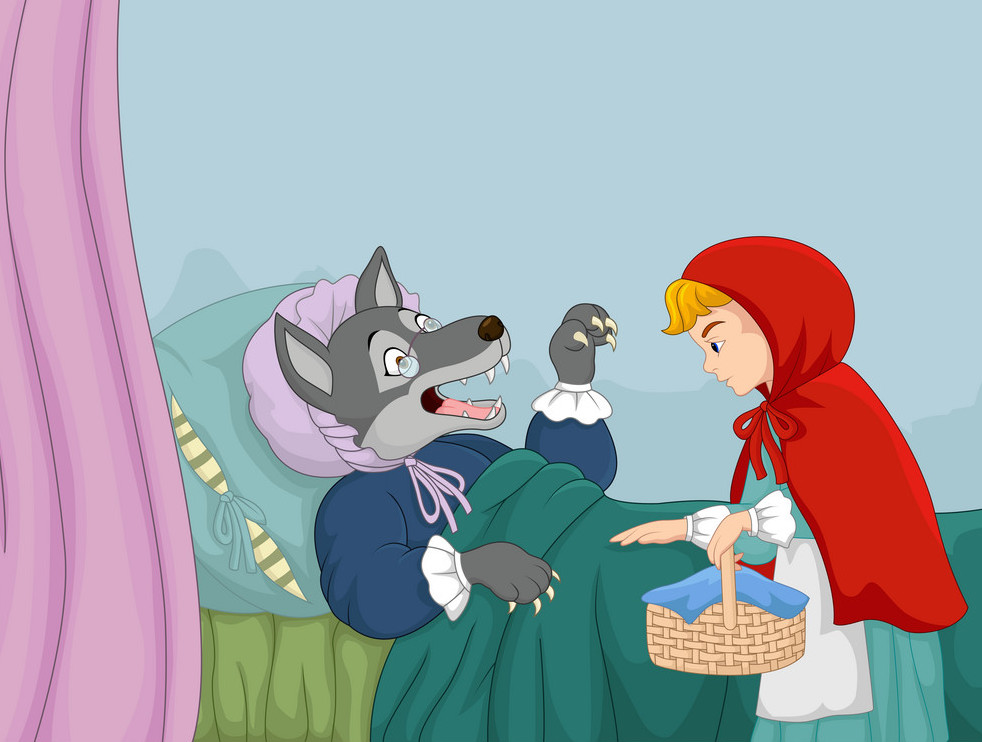

LR trusts the wolf and tells him where she is going. The wolf takes a shortcut to the grandmother's house and eats the grandmother. He then dresses as the grandmother and waits for LR in the grandmother's bed.
LR finally reaches the grandmother's house after taking a roundabout path. Her grandmother seems to be bigger and hairy than before.